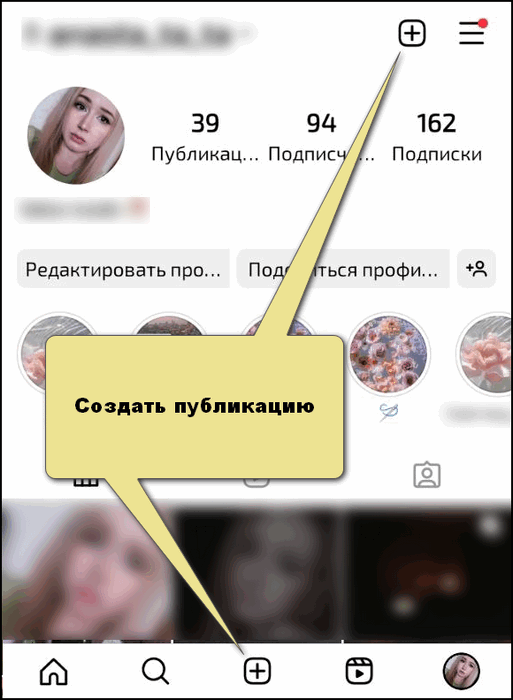
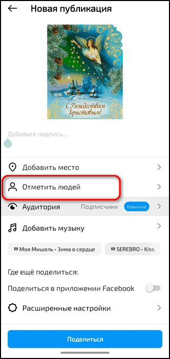
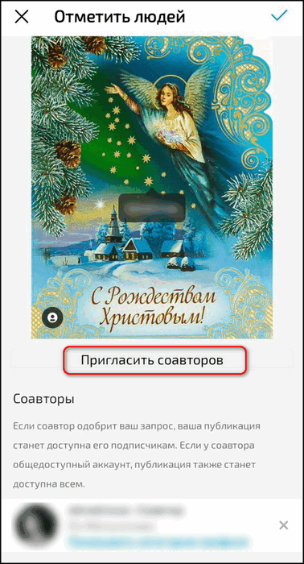
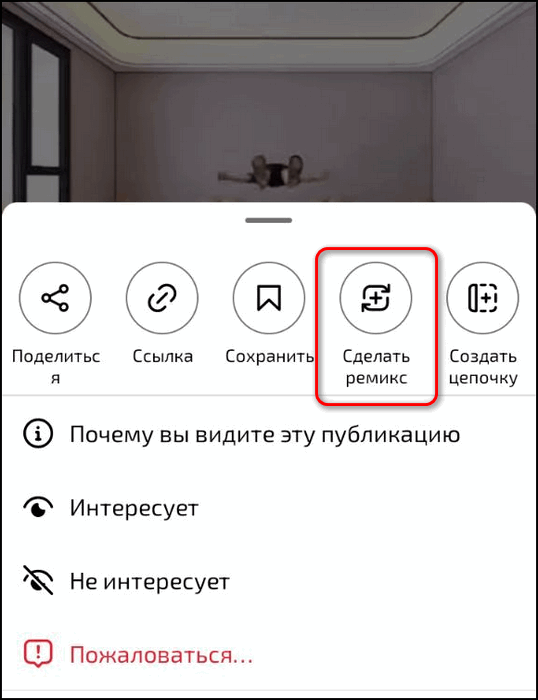
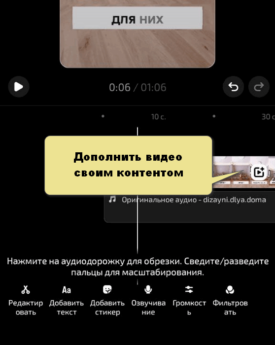

Как сделать совместный пост в Инстаграме: соавторство

Выложить публикацию в Инстаграм* на двоих не так сложно: в одном из обновлений была добавлена функция соавторства. Она позволяет размещать посты сразу на двух страницах, без необходимости сохранять снимок или видео к себе на телефон.
Как работает функция соавторства в Инстаграме*
Соавторство – это размещение записи одновременно на двух аккаунтах. Напоминает репост, но в этом случае нужно отправлять приглашение и разрешение на публикацию контента в чужом аккаунте. Принцип прост: один человек делает пост и приглашает другого к сотрудничеству. Второй получает оповещение - подтвердить или отклонить заявку. При положительном ответе появится меню редактирования поста и возможность добавить на свою страницу. У функции есть особенности:
- работает на любом типе профилей: бизнес и личные - открытые, закрытые. Разница лишь в том, что владельцы скрытых страниц не могут приглашать авторов, на которых не оформлена взаимная подписка;
- при совместном авторстве появится сверху упоминание второго автора, а на публикации – кликабельная отметка;
- можно пригласить до 5 авторов. Каждый раз нажимать «Пригласить соавтора», если нужно добавить нового;
- опция работает только для публикаций в Ленте;
- приглашенный может отказаться и тогда из записи исчезнет упоминание о нем;
- оба автора получают доступ к статистике.
Соавторство в Инстаграме* удобно владельцам двух или более аккаунтов. Можно указать свой второй профиль как соавтора и не создавать контент заново. Если вы хотите узнать, с кем делает соавторство закрытый аккаунт, тогда пользуйтесь этой инструкцией.
Сделать совместный пост
Чтобы выложить совместное фото в Инстаграме*, пользователю нужно перейти к стандартной функции - «Создание публикации». Запись можно редактировать, добавлять фильтры и описание.
Как пригласить второго автора:
- Зайти в Инстаграм* - нажать по кнопке: «Создать публикацию».

- Добавить фото или видео на размещение.
- Нажать по пункту: «Отметить людей» - Пригласить соавторов.

- Указать друзей или знакомых с помощью никнеймов.

- Разместить пост.
Приглашенный автор получит оповещение о том, что можно разместить запись у себя на странице. После разрешения появится окно редактирования публикации и возможность добавить пост.
Ремикс на Рилс в Инстаграме*
Делать совместный пост в Инстаграме* можно не только через совместное авторство, а и создание ремиксов в Рилс. Эта функция предполагает, что создатель контента добавляет свой ролик до или после оригинального, т.е. записи другого пользователя на которой будет создан ремикс. Как записать видео:
- Зайти в Инстаграм* - выбрать в Рилс подходящее видео.
- Нажать три точки снизу – нажать по кнопке «Ремикс».

- Выбрать, когда записать видео: до или после.
- Опубликовать запись.

Так можно создать двойную публикацию с указанием оригинального авторства. Будет размещен только на странице одного автора, а создатель оригинала получит уведомление, что на его клип создали ремикс.
Принять приглашение на соавторство
Когда другой автор отправляет приглашение на участие в совместной публикации, у получателя появится соответствующее оповещение посреди экрана. Там можно отметить: «Принять или отклонить». Примечательно то, что если пользователь отключил в профиле возможность его упоминания – запрос о соавторстве не поступит. В принципе, как и любые отметки на постах не будут доступны.
Если создатель Рилса не желает, чтобы к его постам делали Ремиксы – он может отключить эту функцию. При размещении записи нужно в настройках конфиденциальности указать: «Запретить ремиксы».
Преимущества совместных постов
Выложить фото на два аккаунта – это вариант простого и быстрого создания контента. Предположим, два блогера объединились и сделали серию фотографий с упоминанием бренда. Один из них написал текст и оформил публикацию, а второму, через приглашение к сотрудничеству, не придется заново переписывать и размещать снимки. Другие преимущества, почему делать совместные посты удобнее:
- статистика и аналитика доступна на обоих участвующих аккаунтах. Это значит, что при рекламном сотрудничестве не возникнет проблем с предоставлением подтверждения о собственной популярности;
- более известные персоны могут продвигать таким способом молодых авторов;
- проще размещать записи, если у автора есть два-три аккаунта.
Это эффективный способ, как привлечь новую аудиторию. А если стать соавторов, то это не влияет на продвижение аккаунта и записи. Авторы могут отслеживать статистику и сравнить с одиночными записями.
Для блогеров
Блогерам подобный формат, когда можно пригласить автора, удобен не только вариативностью в контенте, а и коллаборациями с другими создателями контента. Например, нужно привлечь аудиторию к конкурсу или сделать пиар. Вариант с совместными постами работает сразу на два профиля, подписчики увидят упоминание о другом авторе и перейдут в незнакомый аккаунт. Другие способы применения:
- сотрудничество с брендами. Кроме опции «Брендированный контент», можно сделать совместный пост с официальной страницей компании;
- указание своего резервного аккаунта и привлечение аудитории.
Выкладывая совместную публикацию с другим автором, предварительно нужно запросить его статистику. Чтобы не понизить свою репутацию или не потерять подписчиков из-за негативной реакции.
Для компаний
Добавляя соавтора в Инстаграме*, владелец бренда может начать сотрудничество с другими компаниями или привлечь к сотрудничеству крупных блогеров. Опция с соавторством менее удобна для продвижения магазинов и малого бизнеса: для этого предусмотрен вариант «Брендированный контент».
Советы по созданию коллабов
Работая с общими публикациями нужно помнить, что они будут размещены на два аккаунта. Следовательно, нужно упоминать и второго участника. При оформлении лучше использовать карусель и размещать снимки, где есть каждый из участников отдельно. И на такие фотографии делать отметки с упоминанием никнеймов. Рекомендации по соавторству:
- использовать видео для совместных постов. Они быстрее попадают в Интересное;
- привлекать больше авторов. Но с одинаковой тематикой блога;
- сотрудничать с теми, с кем совпадают идеи последних 3 постов;
- устроить «прогрев», если будет сотрудничество с крупным блогером.
Опция актуальна не только для бизнес-аккаунтов, но и владельцев личных общедоступных и даже закрытых. И областью применения могут быть совместные фотографии с друзьям: с прогулки и поездки, где было много общих снимков.